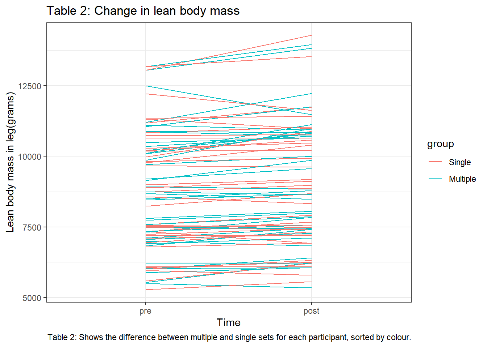
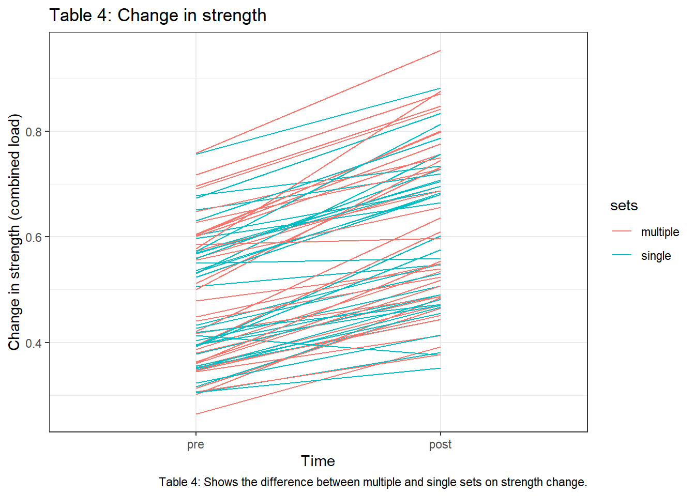

Assignment 5: Analyzing repeated measures experiments
Introduksjon
For en tid tilbake var kroppsbygging, styrketrening og hypertrofi et domene forbeholdt sterke menn, og kun menn. Først i OL i Sydney i 2000 fikk kvinner konkurrere på lik linje menn i olympisk vektløfting (Stone et al., 2006). Siden den tid har søkelyset på styrketrening økt og det har blitt en av de vanligste formene for trening i det norske samfunn ifølge Levekårundersøkelsen i 2019 (Statistisk sentralbyrå, 2019). Styrketrening har visst seg å ha en veldig positiv effekt på blant annet aldersbetinget muskeltap (Hurley et al., 2011) og generell dødelighet (FitzGerald et al., 2004). For å finne ut mer om hvordan styrketrening påvirker kroppen og helse forskes det på faktorer som påvirker effekten av styrketrening. Dette kan være faktorer som treningsvolum, intensitet, hyppighet og øvelsesutvalg. Ved å endre disse variablene kan man endre det mekaniske og metabolske stresset på musklene og kroppen utsettes for (Ratamess et al., 2009; Toigo & Boutellier, 2006).
Mange i dagens samfunn lever i konstant tidsnød og dette kan hindre trening. Forskere ser derfor på hvor lav dose med trening er nødvendig for å oppnå ønsket respons (Choi et al., 2017). Schoenfeld et al. (2019) så på forskjellen i muskelvekst ved å utføre studie der de sammenlignet 1 sett mot tre sett i et styrketreningsprogram. I denne studien fant de ingen signifikant forskjell mellom gruppene som gjennomførte ett sett og gruppen som gjennomførte tre sett. De fant også at mengden trening følger en dose-respons-kurve der et høyere treningsvolum fører til økt hypertrofi, men ikke nødvendigvis like god utvikling i styrke. Flere andre studier har også sett på effekten av å trene ett sett versus tre sett (Galvão & Taaffe, 2005; Hass et al., 2000; Krieger, 2009; Radaelli et al., 2014), men resultatene fra disse studiene har vært sprikende.
I lys av sprikende resultater i forskning og et ønske om å videre belyse temaet om hvilken dose trening som må til for å oppnå en signifikant økning i styrke og hypertrofi så vil denne studien se på effekten av ett sett versus tre sett over en treningsperiode på 12 uker. Vi ligger opp til en hypotese om at gruppen som trener tre sett vil ha en bedre fremgang på styrke og hypertrofi etter 12 uker.
Metode
Deltagere
41 mannlige og kvinnelige deltagere ble rekruttert til studiet. Inklusjonskriteriene for å være med var at deltagerne måtte være mellom 18 og 40 år, ikke-røykende, ha en treningshistorie med minst en økt i uka med styrketrening det siste året og være fri for skader. Av de opprinnelige 41 deltagerne ble sju ekskludert på bakgrunn av at de ikke klarte å fullføre 85% av planlagte treningsøkter av ulike grunner: smerter i underekstremitet under trening (n = 5), skade som ikke var relatert til studiet (n = 1), klarte ikke å gjennomføre studieprotokoll (n= 1).
Intervensjon
Intervensjonen bestod av et 12-ukers styrketreningsprogram for hele kroppen, med trening 2 til tre ganger i uken. Øvelsene på bein ble gjennomført unilateralt for å kunne måle intern differensiering av ulike treningsvolum. Det ene benet trente ett sett, mens det andre benet trente tre sett. Hvilket ben som trente ett og tre sett ble randomisert. Før alle treningsøktene gjennomførte deltagerne en standardisert oppvarming med 5 minutter på ergometersykkel (12-14 på Borg-skala) og 10 repetisjoner av 4 øvelser med kroppsvekt: individuelt tilpassede armhevinger, situps, rygghev og knebøy. Oppvarmingen ble fullført med ett sett med 10 repetisjoner på 50% av 1RM i hver øvelse i programmet.
Treningsprogrammet som alle deltagere gjennomførte var likt, eneste forskjell var antall sett som ble gjennomført på høyre eller venstre side. Øvelsene som ble gjennomført ble gjennomført i en standardisert rekkefølge: ettbeins beinpress, knefleksjon og kneekstensjon. Det benet som bare gjennomførte ett sett gjennomførte sitt sett mellom andre og tredje sett for motsatt ben. Etter beinøvelsene gjennomførte deltagerne øvelser på overkroppen i følgende rekkefølge: benkpress med manualer, nedtrekk og skulderpress eller sittende roing (annenhver økt). Treningsintensiteten var progressiv gjennom intervensjonsperioden, fra 10RM de første to ukene, til 8RM de neste tre ukene og 7RM de siste sju ukene. For å bidra til god restitusjon ble deltagerne gitt en standardisert drikk bestående av 0.15g/kg kroppsvekt med protein, 11.2g/kg kroppsvekt med karbohydrater og 0.5g/kg kroppsvekt med fett. ## Testing ### Styrketester Styrketester ble gjennomført ved pre og post. Isokinetiske og isometriske unilaterale øvelser på kneekstensjon ble gjort med dynamometer (Cybex 6000, Cybex International, Medway USA). Maksimalt isokinetisk (isok) dreiemoment ble målt på tre ulike vinkelhastigheter (60o, 120o og 240o s-1). Isometrisk (isom) styrke ble målt i 30o graders vinkel (full ekstensjon = 90o). Deltagerne fikk 2 forsøk på «isok60» og «isom60» og tre forsøk på «isok120» og «isok240», høyeste verdi ble registrert. 1RM ble målt i unilateral beinpress og kneekstensjon.
Oppvarming var standardisert med 5 minutter på ergometersykkel, standardiserte oppvarmingsrepetisjoner i dynamometeret. I 1RM testen ble det gjennomført spesifikk oppvarming til hver øvelse med 10, 6 og 3 repetisjoner på 50, 75 og 85% av forventet 1RM. Deretter ble 1RM funnet ved at vekten økte gradvis helt til deltagerne ikke lenger klarte å fullføre en hel repetisjon. Den høyeste vekten deltagerne løftet i de ulike øvelsene ble registrert som 1RM. Deltagerne fikk 4-6 forsøk. Resultatene ble regnet om til en kombinert score som et gjennomsnitt av alle styrketestene.
Måling av kroppssammensetning
Ved pre og post-test ble det målt kroppssammensetning med «dual-energy X-ray absorptiometry» (DXA) (Lunar Prodigy, GE Healthcare, Oslo, Norway), i henhold til standardisert protokoll. Deltagerne fikk instruksjon om å komme fastende (2 timer) og frastå fra tung fysisk aktivitet (48 timer) før måling.
Statistikk
Statistisk analyse er gjennomført i RStudio (versjon 2022.07.2.576) for Windows. Deskriptiv statistikk er skrevet som gjennomsnitt og standardavvik (mean(SD)), oppgitt med og uten prosent. Statistiske modeller er skrevet på engelsk for å unngå begrepsblandinger. For å tolke effekten av treningsvolum (ett eller tre sett) på muskelhypertrofi og muskelstyrke ble det brukt ANCOVA modell til å regne ut p-verdi på endringsscore fra pre- til post-test. Statistisk signifikans er satt ved P < 0.05.
Resultater
Kroppssammensetning
Resultatene i studien viser begge gruppene at 12 uker med styrketrening førte til en signifikant endring i fettfri masse i bein som gjennomførte tre sett 3.32% (± 4.39%) sammenlignet med bein som gjennomførte ett sett 2.04% (± 3.71%). Statistisk signifikansverdi p < 0.05.
| Table 1: Average change in lean body mass in legs | ||
| Measured in grams and percentage | ||
| Sets | Mean(SD) in grams | Mean(SD) in % |
|---|---|---|
| 3 sets | 289(423) | 3.32(4.39) |
| 1 sets | 174(342) | 2.04(3.71) |
| Mean (SD) increases in lean body mass for groups performing multiple sets and single sets. | ||

Muskelstyrke
Resultatene av testene gjennomført på muskelstyrke viser at begge gruppene økte i styrke fra pre til post. Resultatene viser at bein som gjennomførte ett sett hadde en prosentvis økning i styrke på 24.5% (± 12.9%), bein som gjennomførte tre sett hadde en prosentvis økning i styrke på 31% (± 14.2%). Resultatene viser en signifikant forskjell i endring i muskelstyrke mellom gruppene. Statistisk signifikans p <0.05.
| Table 3: Average change in strength from 3 and 1 sets | |
| Measured in percentage | |
| Sets | % change(SD) |
|---|---|
| 3 sets | 31(14.2) |
| 1 sets | 24.5(12.9) |
| Average change strength in % (SD for 3 sets and 1 set). | |

Diskusjon
Hovedfunnene i den gjennomførte studien viser oss at to til tre økter med styrketrening i uka over en 12-ukers treningsperiode ga økt styrke og muskelhypertrofi i beina. Å trene tre sett gir bedre effekt i form av økt styrke og hypertrofi sammenlignet med å trene ett sett med styrketrening over en 12-ukers treningsperiode. Resultatene samsvarer med det store mengder litteratur viser, (Galvão & Taaffe, 2005; Krieger, 2009; Krieger, 2010; Schoenfeld et al., 2016) at tre sett har større effekt enn ett sett med styrketrening på muskelstyrke og muskelmasse.
Brigatto et al. (2022) fant også en sammenheng med at flere sett var gunstig for å oppnå større grad av muskelvekst og økt muskelstyrke. Forfatterne fra denne studien finner også en statistisk signifikant økning på høyt volum og økt styrke i bein, sammenlignet med lavere volum. Dette er også i tråd med Hass et al. (2000) som finner signifikant økning med tre sett styrketrening sammenlignet med ett sett styrketrening på øvelser på underkroppen, men ikke på øvelser på overkroppen. Dette kan antyde at tre et høyere treningsvolum er å foretrekke for å øke styrke i underkroppen, men at kan være tilstrekkelig med ett sett på overkroppen. Dette stemmer også overens med konklusjon fra andre studier (Rønnestad et al., 2007; Schoenfeld et al., 2015). Det vil derfor være av interesse å reprodusere dette studiet, der man i tillegg til å trene forskjellig på høyre og venstre ben, også gjør det samme på høyre og venstre arm. Dette vil undersøke om man ser samme effekten som nevnte studier også med dette studiedesignet.
Når vi ser på økningen i muskelmasse, var denne også signifikant med et høyere treningsvolum. Dette i tråd med funnene til Schoenfeld et al. (2019), som konkluderte med at muskelhypertrofi følger et dose-respons-forhold, der et økt treningsvolum førte til mer muskelhypertrofi sammenlignet med et mindre volum. Galvão & Taaffe (2005) kunne ikke trekke samme konklusjon på deres studie der de sammenlignet ett sett og tre sett på eldre mennesker, der de konkluderte med at trening med ett sett per øvelse er tilstrekkelig for å bedre fysisk prestasjonsevne. Studien vi har gjennomført skiller seg ut ved at hver enkelt deltager er sin egen kontroll ved at de trener høyre og venstre ben forskjellig.
Konklusjon
Resultatene i studien stemmer med hypotesen om at 3 sett gir større effekt på styrke og muskelhypertrofi sammenlignet med ett sett styrketrening.